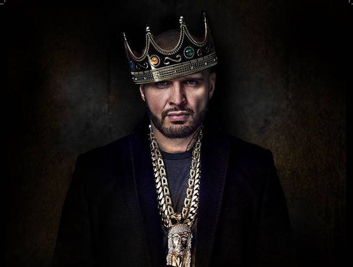

Rytmus

Rytmus
Patrik Vrbovský (3. ledna 1977, Kroměříž), známý jako Rytmus, je slovenský rapper, zpěvák, herec a televizní osobnost. Patří mezi nejvlivnější postavy česko-slovenského hip hopu a je zakladatelem legendární skupiny Kontrafakt.
Základní informace
- Rodné jméno: Patrik Vrbovský
- Narození: 3. ledna 1977
- Žánry: rap, hip hop, R&B, pop, electro
- Povolání: rapper, zpěvák, herec
- Aktivní roky: 1992 – současnost
- Skupina: Kontrafakt
Začátky kariéry
S rapem začínal už v první polovině 90. let. Zpočátku vystupoval pod jménem Pa3k Metamorfolord a objevil se na kultovní slovenské hiphopové kompilaci Zvuk ulice.
Kontrafakt
Společně s rapperem Egem založil skupinu Kontrafakt, která vydala zásadní alba jako E.R.A. (2004), Bozk na rozlúčku (2007) nebo Navždy (2013). Kontrafakt výrazně ovlivnil celou rapovou scénu v Česku i na Slovensku.
Sólová kariéra
V roce 2006 vydal své první sólové album Bengoro. Následovala úspěšná alba Král, Fenomén a především Krstný otec (2016), které se stalo jedním z nejprodávanějších rapových alb na Slovensku.
Styl a kontroverze
Rytmus je známý svým hlubokým hlasem, tvrdým projevem a často kontroverzními texty. Je považován za jednoho z nejvýraznějších, ale i nejkontroverznějších rapperů na scéně.
Televize a poroty
- porotce Česko Slovenská SuperStar
- kouč soutěže Hlas Česko Slovenska
- porotce rapové soutěže THE MAG WRAP (2024–2025)
Herecká kariéra
Objevil se také ve filmech a seriálech, například Bastardi, Smrtonosná past: Opět v akci nebo seriálu Mesto tieňov.
Rodina
Je ženatý s moderátorkou a modelkou Jasminou Alagič, se kterou má syna Sanela. V minulosti tvořil pár se zpěvačkou Darou Rolins.
Zajímavosti
- patří mezi nejprodávanější rapové interprety na Slovensku
- zakladatel vlastních labelů a sublabelů
- ikona slovenského rapu už více než 30 let
Diskografie
- Bengoro II · TODO
- Krstný Otec · 2016
- Jediný čo hreší · TODO
- Fenomen · TODO
- Král · TODO
- Si zabil · TODO
- Bengoro · 2006